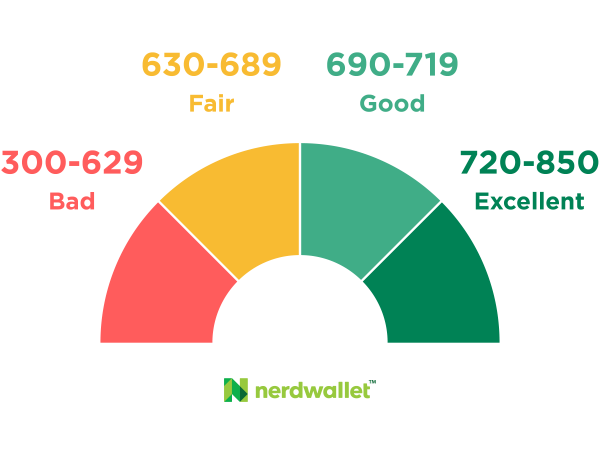

What is credit?
Credit is a measure of trust used for determining whether a person is suitable for a loan, such as consumer credit
(credit card), home loans, etc.
Credit is commonly measured using a score, with the most popular being the FICO score.
The FICO score is developed and updated by Fair, Isaac and Company (now called the Fair Isaac Corporation).
Having good credit is very important - you will have much lower interest rates when buying a home, be able to take out more loans, and enjoy better credit cards.
Additionally, some jobs will look at credit, though this is somewhat in a legal gray area.
Maintaining Good Credit Score
For a FICO score, the ranges are as follows:

Here is a rough breakdown of factors impacting your credit score:

Strategies for improving and maintaining credit
-
Start your credit history early and get a credit card as soon as you turn 18.
-
If you are under 18, you can be added to most guardians' credit cards as an authorized user and begin building credit history.
-
Keep your credit utilization below 30-40%. For example, if you have a limit of $1000, try not to spend more than 30-40% each cycle.
-
Set up automatic credit card payments to never miss one.
-
Don't apply for too many credit cards at once (at most one per month), but aim to have between 1-3 cards. This is also a good way to lower your utilization.
-
Take actions to prevent yourself from identity theft and fraud, such as reviewing your credit reports.